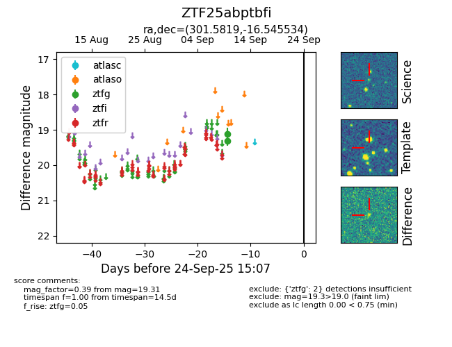

FINK: ZTF25abptbfi
Lasair: ZTF25abptbfi
ALeRCE: ZTF25abptbfi
ZTF25abptbfi (ztf,fink)
equatorial (ra, dec) = (301.5819,-16.54553)
galactic (l, b) = (25.8279,-23.80949)

last ztfg=19.31
2 ztfg detections